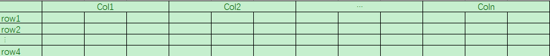
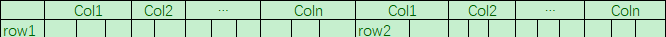
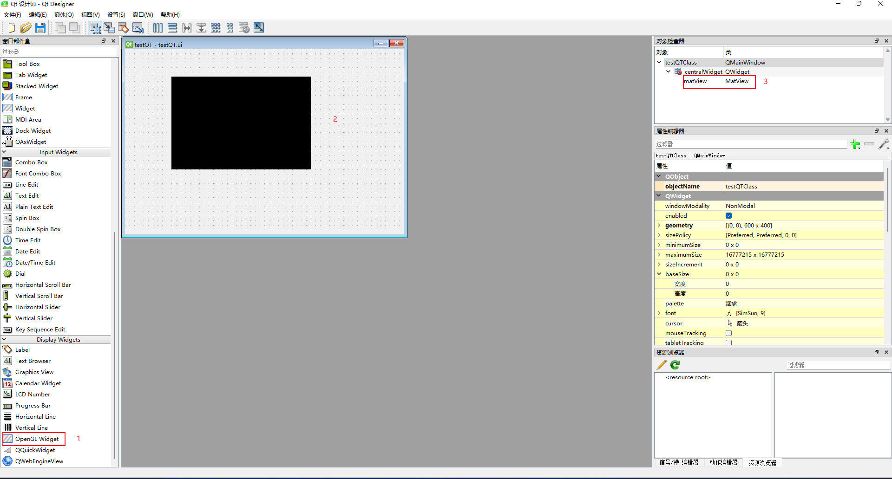

1. Mat的遍历
Mat应该被视作为一个矩阵，三维的图像用表格形象化可以表示为

每一个Col表示一个像素值
### 1.1 连续空间遍历
连续空间指的是row1后面接的就是row2，也就是信息在内存中是连续存储的，拉直后可以表示为

这样我们就可以像遍历一维空间一样对Mat进行遍历 1
2
3
4
5
6
7
8
9
10// elemSize在三维图像中就是3（BGR）
int elemSize = mat.elemSize();
// 一维数组的总大小
int size = mat.rows * mat.cols * elemSize;
//遍历Mat中的所有元素并将其值赋为整数随机数(0~255)
for (int i = 0; i < size; i+= elemSize) {
for (int j = 0; j < elemSize; j++) {
mat.data[i+j] = rand() % 255;
}
}
1.2 不连续空间遍历
但是Mat中也可能会出现row的不连续，也就是在row中是连续存储的而多个row是不连续的，这种遍历就无法使用连续的遍历方式进行。
不连续空间的遍历有 -
直接使用指针进行遍历。在Mat内部维护了一个Step变量可以帮助我们进行row的跳转，然后使用指针的方式访问每一个Col中的每一个值。
1
2
3
4
5
6
7for (int row = 0; row < mat.rows; row++) {
for (int col = 0; col < mat.cols; col++) {
(&mat.data[row * mat.step])[col * elemSize] = rand() % 255;
(&mat.data[row * mat.step])[col * elemSize + 1] = rand() % 255;
(&mat.data[row * mat.step])[col * elemSize + 1] = rand() % 255;
}
}&进行了取地址，这表明了整体使用指针操作是很麻烦的也很容易犯错。
-
使用ptr模板函数进行遍历。鉴于直接使用指针的方式的复杂程度，ptr模板函数简化了这个方式，使得用户可以像操作一维指针一样操作mat
1
2
3
4
5
6
7for (int row = 0; row < mat.rows; ++row) {
for (int col = 0; col < mat.cols; ++col) {
mat.ptr<Vec3b>(row, col)->val[0] = rand() % 255;
mat.ptr<Vec3b>(row, col)->val[1] = rand() % 255;
mat.ptr<Vec3b>(row, col)->val[2] = rand() % 255;
}
}Veb3b表示的每个变量都是大小为3字节(Byte)。 -
使用at模板函数进行遍历。at又进一步简化了指针函数的操作，将val去掉了，使用下标直接操作3维数据。
1
2
3
4
5
6
7for (int row = 0; row < mat.rows; ++row) {
for (int col = 0; col < mat.cols; ++col) {
mat.at<Vec3b>(row, col)[0] = rand() % 255;
mat.at<Vec3b>(row, col)[1] = rand() % 255;
mat.at<Vec3b>(row, col)[2] = rand() % 255;
}
}1
2
3
4
5for (auto it = mat.begin<Vec3b>(); it != mat.end<Vec3b>(); ++it) {
(*it)[0] = rand() % 255;
(*it)[1] = rand() % 255;
(*it)[2] = rand() % 255;
}
2. OPenGL的Widget的使用
- 环境设置 > 操作系统: Windows11 21H2
> CMake-gui: 3.24.2 (不要使用3.25.0-rc2，在configure过车中会出现类型大小检查错误)
> OpenCV: 4.6.0
> QT: 5.12.12
QT在VS2022中的安装见https://blog.csdn.net/weixin_52384330/article/details/122033874
- 在VS中新建一个类继承
QOpenGLWidget,然后创建一个有参构造函数以及重写paintEvent方法，这个方法是在画面刷新时调用的。创建完成后header的文件如下所示然后实现类中的对象1
2
3
4
5
6
7
8
9
10
11
class MatView: public QOpenGLWidget
{
Q_OBJECT // 这里是用于表明这是QT的对象，下面一定要空行
public:
MatView(QWidget* parent);
~MatView();
void paintEvent(QPaintEvent* e);
};这样我们就可以在QT designer中设置OpenGL的Widget为我们实现的类了1
2
3
4
5
6
7
8
9
10
11
12
13
14
15
16
17
18
19
20
21
22
23
24
25
using namespace cv;
MatView::MatView(QWidget* parent):QOpenGLWidget(parent)
{
}
MatView::~MatView()
{
}
void MatView::paintEvent(QPaintEvent* e)
{
Mat src = imread("1.png");
cvtColor(src, src, cv::COLOR_BGR2RGB);
QImage image(src.data, src.cols, src.rows, QImage::Format_RGB888);
QPainter painter;
painter.begin(this);
painter.drawImage(QPoint(0,0), image);
}